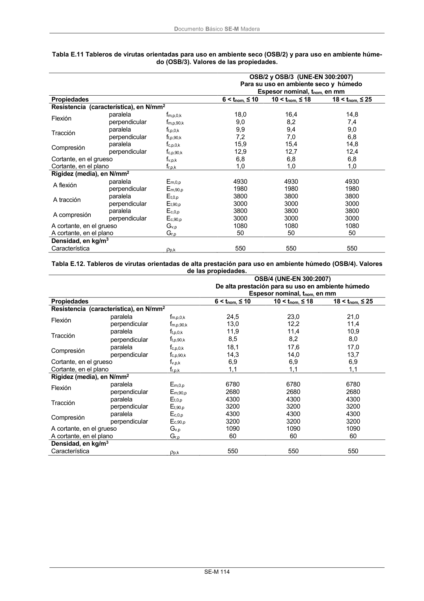

DB-SE-M Madera · edición 2019-12-20 · capa oficial
Documento DB-SE-M-oficial · SHA-256 del PDF 26b5819839ebfda78b0b119c5e76a0a37773b0d763c05688541870075df93718
Copia fiel del PDF fuente · Fuente oficial
Ficha de la disposición en la fuente oficial
Formatos: JSON del segmento · Markdown
E.3.4 Tableros virutas orientadas E.3.4.1 Valores de las propiedades de resistencia, rigidez y densidad de los tableros contracha- E.3.4.1 Valores de las propiedades de resistencia, rigidez y densidad de los tableros contracha- pados 1 En las tablas E.11 y E.12 se indican los valores de las propiedades de resistencia, rigidez y densidad asociadas a cada tipo de tablero de tablero de virutas orientadas (OSB). DocumentoBásico SE-M Madera SE-M 114 Tabla E.11 Tableros de virutas orientadas para uso en ambiente seco (OSB/2) y para uso en ambiente húme- do (OSB/3). Valores de las propiedades. OSB/2 y OSB/3(UNE-EN 300:2007) Para su uso en ambiente seco y húmedo Espesor nominal, tnom, en mm Propiedades
